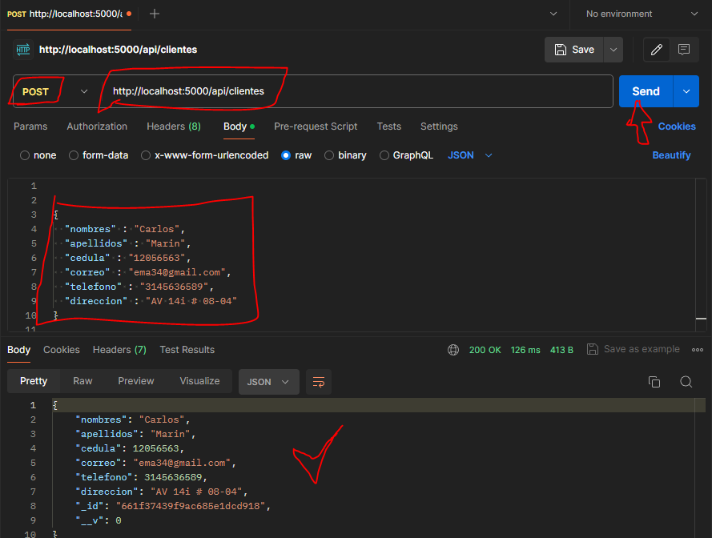
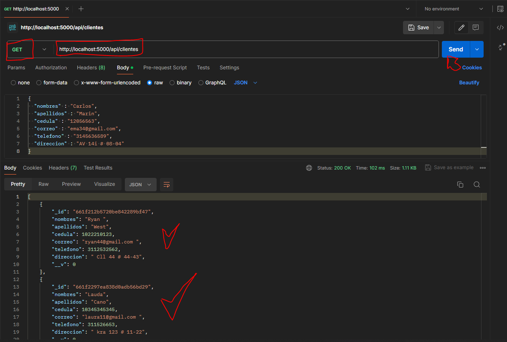

CRUD / Express y MongoDB - Parte 2
En esta sesión se van a crear los siguientes archivos:
js
↓ config
db.js // New
↓ controllers
ClienteController.js // New
↓ models
Cliente.js // New
→ node_modules
↓ routes
RouterCliente.js // New
→ src
.env
package-lock.json
package.json
El archivo config/db.js es el que contiene la función para la conexión con la BD
db.js
const mongoose = require('mongoose');
require('dotenv').config();
// función para conectar a la base de datos
const conectarBD = () => {
mongoose
.connect(process.env.MONGO_URL)
.then(() => console.log("Conectado a la base de datos ⚡"))
.catch((err) => console.error(err));
}
module.exports = conectarBD;
Los archivos ClienteController.js, Cliente.js y RouterCliente.js se encargan de la gestión de ingreso de datos a nuestra base de datos. Se establecen las rutas a usar, los modelos y sus respectivas funciones
ClienteController.js
// Exportamos nuestro modelo
const Cliente = require('../models/Cliente');
// Creamos una función para agregar clientes
exports.agregarClientes = async(req, res) => {
try {
let clientes = new Cliente(req.body)
await clientes.save();
res.send(clientes);
} catch (error) {
console.log(error)
res.status(500).send('hubo un error al agregar un cliente üòï')
}
}
// Creamos la función para mostrar clientes
exports.mostrarClientes = async (req, res) => {
try {
const clientes = await Cliente.find();
res.json(clientes);
} catch (error) {
console.log(error)
res.status(500).send('hubo un error al mostrar un cliente üòï')
}
}
NOTA
El código define dos funciones para gestionar clientes en una aplicación Node.js con Express y Mongoose. La función agregarClientes agrega un nuevo cliente a la base de datos utilizando el modelo Cliente, mientras que mostrarClientes recupera y muestra todos los clientes almacenados. Ambas funciones manejan errores mediante un bloque try/catch, registrando cualquier error en la consola y enviando respuestas de error al cliente cuando sea necesario.
Cliente.js
// Cliente.js Va a contener el modelo, el modelo debe ser igual a lo que tenga la base de datos:
const mongoose = require ('mongoose');
const clientesSchema = mongoose.Schema({
nombres: {type: String, required: true},
apellidos: {type: String, required: true},
cedula: {type: Number, required: true},
correo: {type: String, required: true},
telefono: {type: Number, required: true},
direccion: {type: String, required: true},
}, {versionkey: false});
module.exports = mongoose.model('Cliente', clientesSchema)
NOTA
Este código define el modelo Cliente para una base de datos MongoDB utilizando Mongoose en una aplicación Node.js. El esquema clientesSchema especifica las propiedades y tipos de datos que deben tener los documentos de la colección "clientes", incluyendo campos como nombres, apellidos, cédula, correo, teléfono y dirección. Finalmente, el modelo se exporta para que pueda ser utilizado en otras partes de la aplicación.
RoutersCliente.js
const express = require('express');
const router = express.Router();
const ClienteController = require('../controllers/ClienteController');
router.post('/', ClienteController.agregarClientes);
router.get('/', ClienteController.mostrarClientes);
module.exports = router;
NOTA
Este código configura un enrutador en una aplicación Express de Node.js. Utiliza el módulo express para crear un nuevo enrutador con express.Router(). Luego, importa el ClienteController, que contiene métodos para manejar las solicitudes POST y GET relacionadas con clientes. El enrutador se configura para escuchar las rutas '/' con métodos POST y GET, que serán manejadas por las funciones agregarClientes y mostrarClientes del ClienteController, respectivamente. Finalmente, exporta el enrutador para que pueda ser utilizado en otros archivos de la aplicación.
Por ultimo el archivo src/index.js queda con la siguiente configuración parea que todo funciones de manera correcta
index.js
// Aquí iniciaremos express
const express = require('express');
//new sesión 26
const conectarBD = require('../config/db');
const cors = require ('cors');
// Configurando express y puerto
const app = express();
const port = 5000;
//new sesión 26
app.use(express.json());
// Aca van las rutas de los módulos
app.use('/api/clientes', require('../routes/RoutersCliente'));
//enlazamos la conexión de la BD
conectarBD();
app.use(cors());
// Puerto donde se lanza el servidor
app.listen(port, () => console.log('Nuestro servidor se encuentra conectado üòé http://localhost:', port));
app.get('/', (req, res) =>{
res.send('Bienvenido, nuestro servidor esta configurado');
});
Si comprobamos el código con Postman, ingresando datos a nuestra base de datos podemos comprobar que funciona tanto para POST como GET
Probando las funciones, ingresar y mostrar datos
Comprobando POST
Comprobando GET
